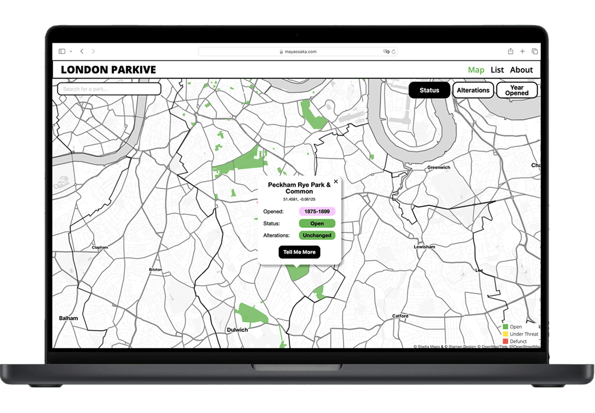
The London Parkive is an interactive map documenting the history and evolution of London's parks and open spaces which I researched, designed and developed as part of my final year project at university.
Access the London ParkiveThe London Parkive is an archive of London’s parks and open spaces which allows you to explore their histories and evolution. It takes the form of a website where the main page is an interactive map. By toggling between the three available view modes you view different colour coded information on the parks.
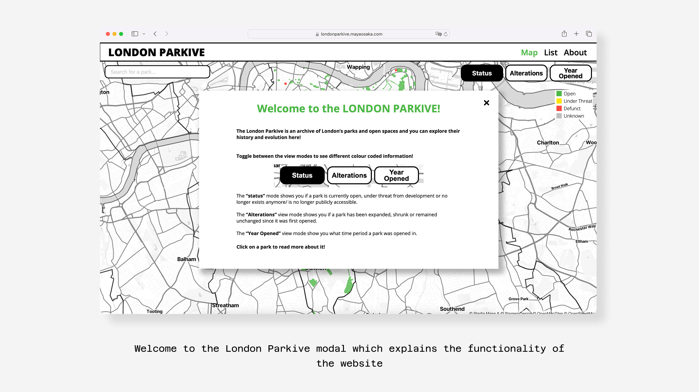
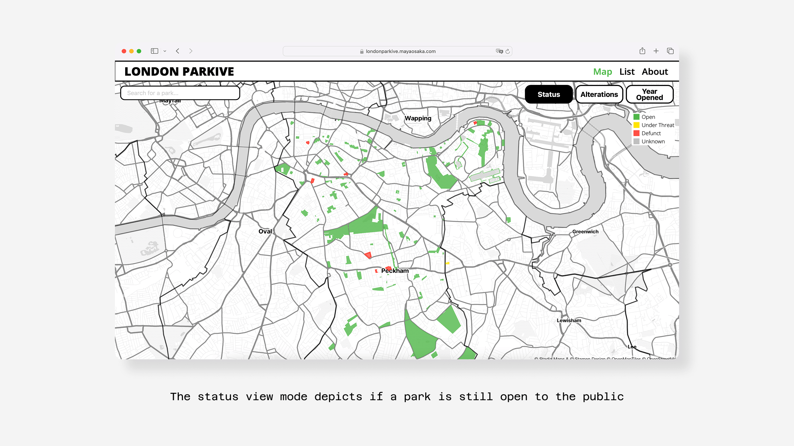
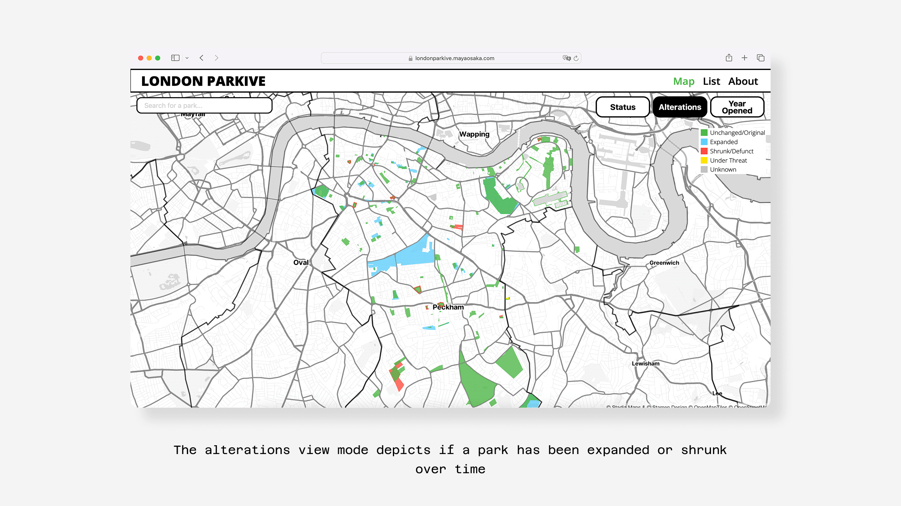
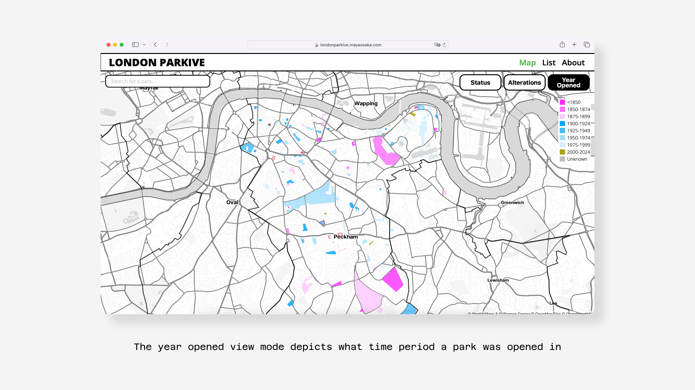
Clicking on a park will open up a pop up that displays information on the park. Currently the information displayed includes the parks coordinates, its names (if it goes by more than one), it’s view mode classifications and a brief history.
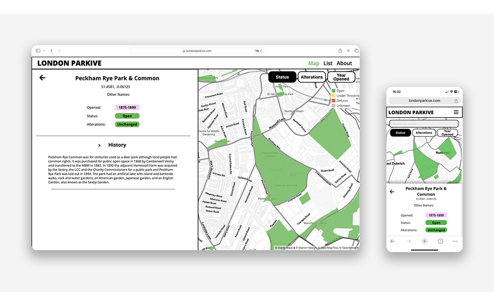
As the project only lasted 9 months the London Parkive in its current form is limited. It only displays information on Southwark and the data depicted is focused on history. However, there is the potential for the project to be scaled up to include the whole of London, or even the whole country. Also different types of data could be displayed as well making it a versatile tool with lots of potential.
As this was a university project, alongside the website I also wrote a context report (dissertation). This was written early on in the project while I was looking for inspiration, researching and experimenting on how to build the website. You can read the context report by clicking the button below.
The project stemmed from a personal desire to understand what the situation is regarding London’s parks. In my first year of university I discovered a park that was being considered as a site for a building development project. The park was a charming, green haven tucked away in a quiet residential area of Lewisham and I was shocked because it had never occurred to me that parks in London could be under threat, after all aren’t they well protected?
“I wonder how many parks have been developed on or shrank as a result of development?”
was the first question that popped into my head. Despite finding some interesting articles about under threat parks by charities like CPRE London I couldn’t find any comprehensive information to answer my question. So the idea for the London Parkive was born. A platform that could help consolidate and showcase the situation on London’s parks and open spaces.
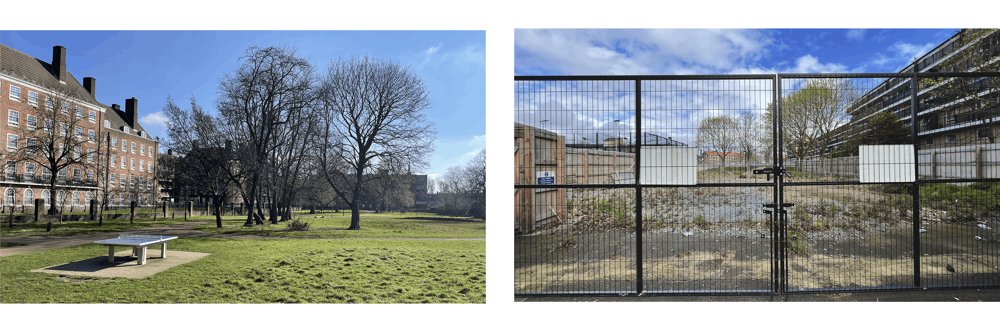
The image on the left is Charlotte Turner Gardens, the park which first inspired this project. The image to the right depicts an example of a green space in a residential area which has been removed (commonly referred to as an “infill site” see Parkive V1 for more details on that.)
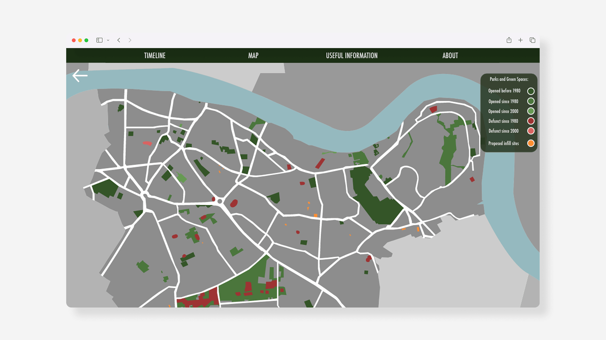
In my first year of university I researched and built the first prototype of the Parkive over 6 weeks using Adobe XD. This version focused on Southwark and depicted the status of parks which were ‘Open’ (Green), ‘Defunct’ (Red) and ‘Under threat’ (Yellow). It also depicted what time period the park was opened in (the lighter the shade the newer the park). You can view the prototype by clicking the button below:
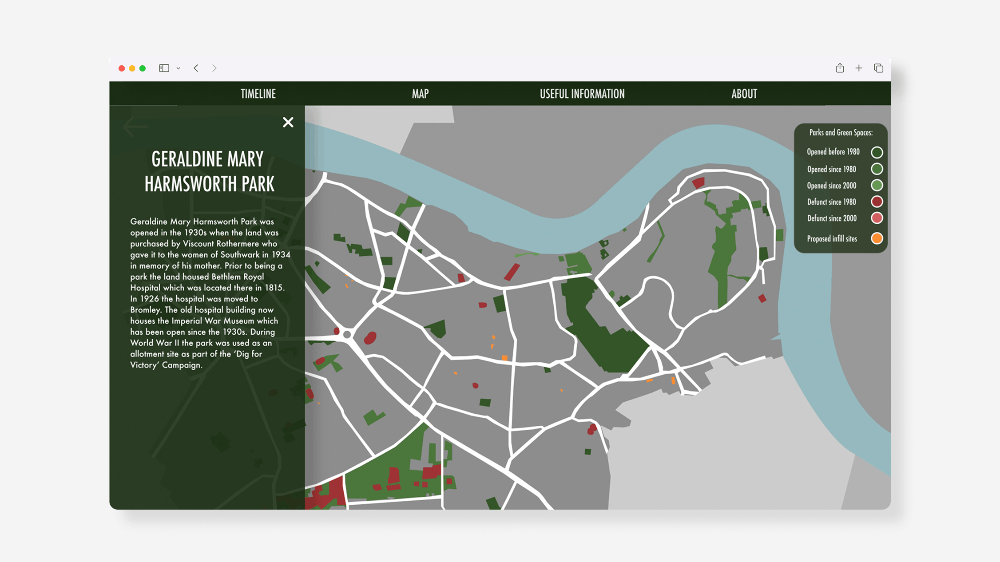
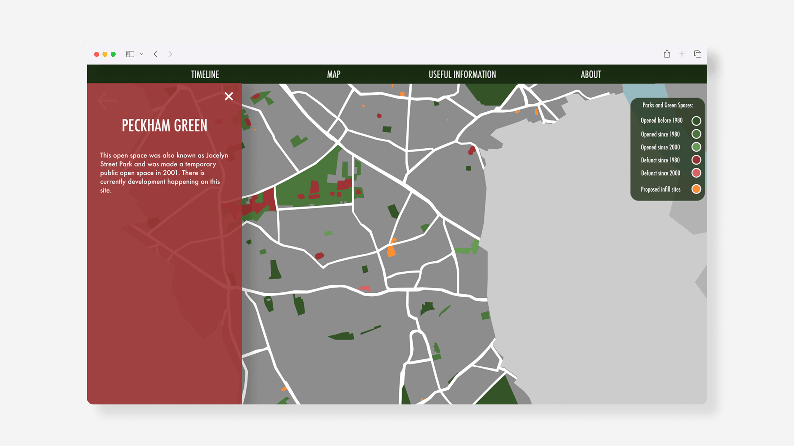
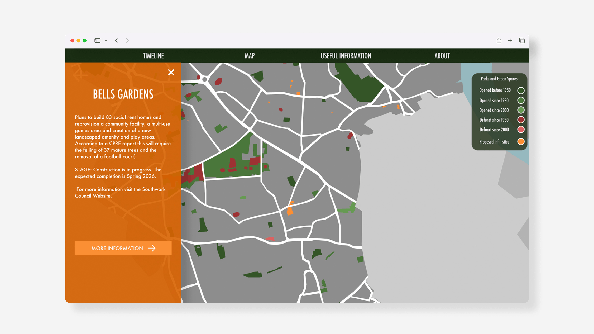
In my final year at university, I had the opportunity to write my own brief and work on it for 8 months. So, in November 2023, I embarked on the journey of creating V2.
Several methods were used for collecting the datasets on parks including:
In local archives I was able to request all of their documents on parks and open spaces. They would usually come in boxes or folders and I could sift through them looking for official council documents that contain complete lists of parks and open spaces. They were often dated making it easy to find out exactly which parks existed in what time periods and often contained other useful information like the park’s address or opening date. (While it isn’t relevant to this particular project some lists also contained acquisition and maintenance costs which was interesting!).
Below you can see some examples of these lists.
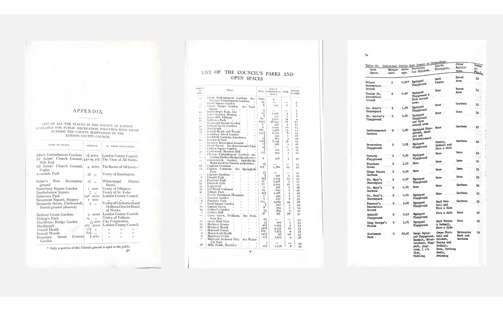
One particular website that came in very handy for this was the National Library of Scotland’s (NSL) website which has a tool for viewing and comparing digitised historic maps. The tool includes an option for viewing a current map and a digitised old map side by side. As the old maps were georeferenced it was easy to locate parks and see if and when a park has been opened, closed, expanded or shrunk. The image below shows how Nursery Row Park has been expanded compared with the old map on the left.
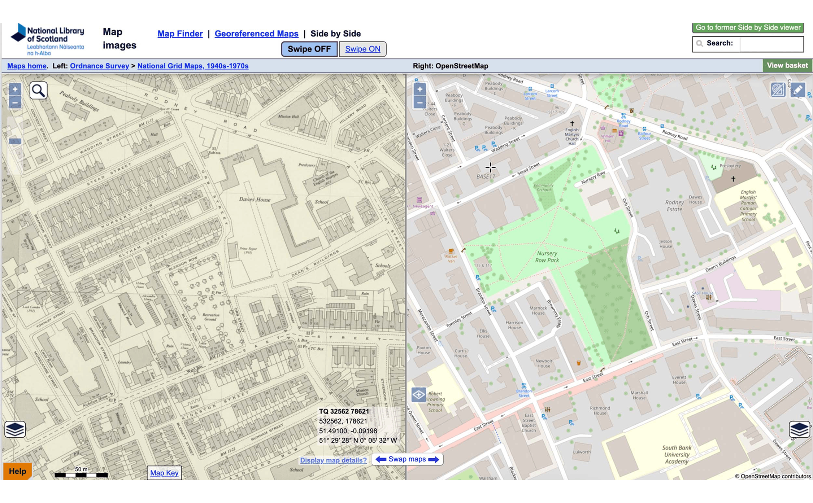
By utilising the NLS’s APIs, I was able to import the maps into geoJSON.io, a website that allows you to draw shapes on a map and store them in geoJSON format which can be used with JavaScript. This allowed the creation of the ‘Alterations view mode’ where you can view whether or not a parks boundaries have been expanded or shrunk over time.
Below you can see an example of a park that has been expanded. The green colour shows the original boundaries and the blue shows the current boundaries.
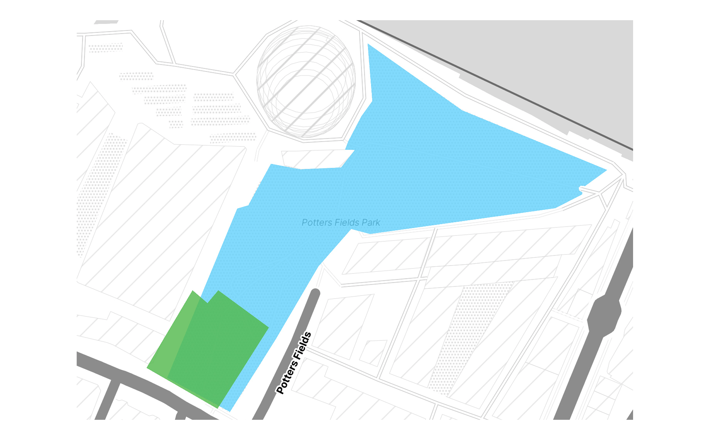
The Parkive is by no means the first website which hosts information on parks and open spaces. Below is a list of other existing websites I used to find out information on parks including their histories and general information.
The collected datasets on the parks were organised onto a Notion spreadsheet to begin with. Datasets that were documented include:
The Notion spreadsheet was then converted to CSV format, then to JSON format in order to add the datasets to the website.
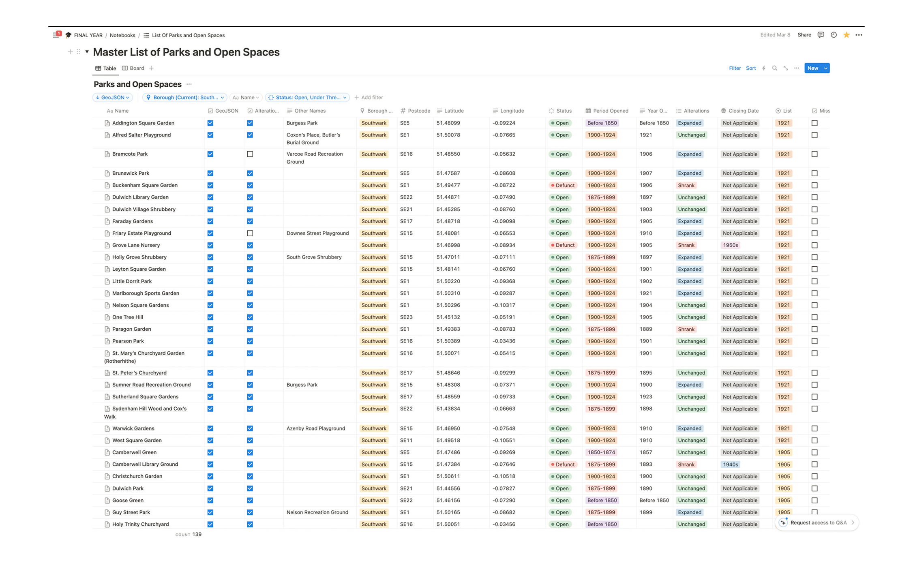
An idea that was explored early on in the project was to create an input form that would allow a user to input park data directly into the website instead of importing a CSV file. Creating this functionality would allow the London Parkive to become a more scalable project and could open up the potential to community contributions. I designed an input form in Figma to explore this idea. However due to the tight timeline I was not able to fully flesh this idea out.
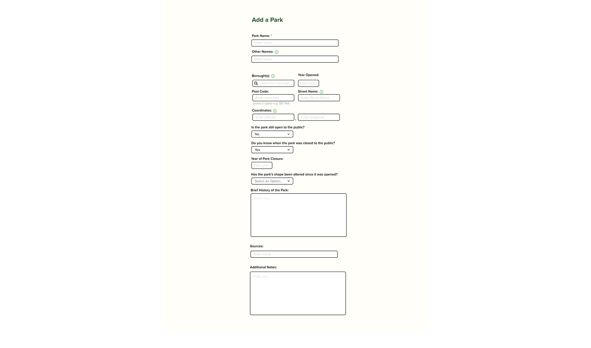
The London Parkive has a simple aesthetic consisting of a monochrome base colour palette. In truth, the final look is based on the wireframes. When I showed my classmates and friends the wireframes, the overall consensus was that they liked how simple it looked because it made the colour coded datasets on the map stand out more and also made the website more user friendly. For this reason, and also to keep the development process as simple as possible, I stuck to this aesthetic.
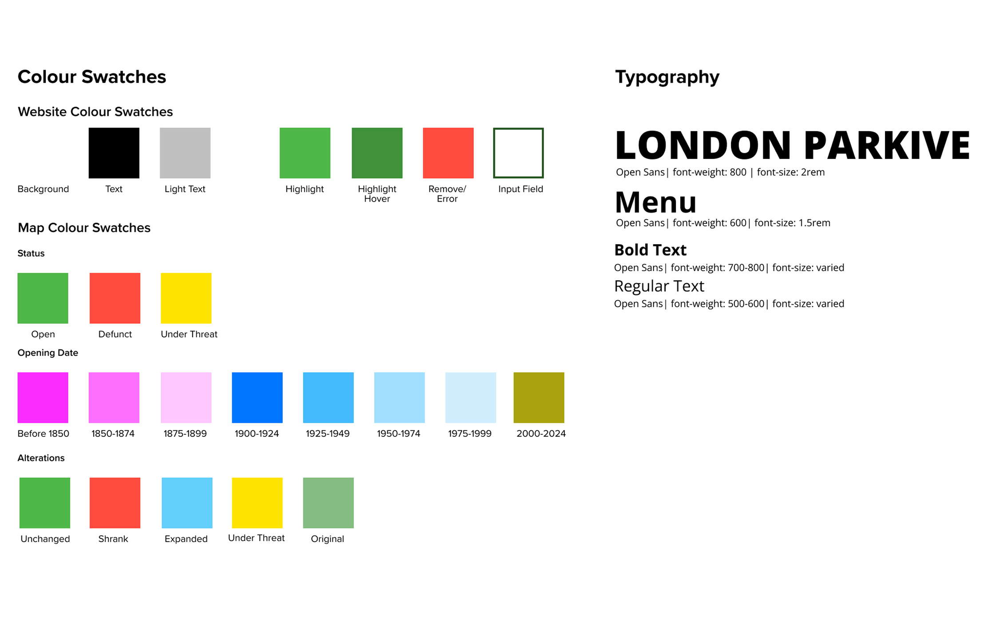
While I had initially been eager to practice my prototyping and mock up skills, the decision to stick to a simple aesthetic, paired with the desire to focus more time on development meant spending less time in Figma. The wireframes displayed below show some of the potential ideas for the Parkive which I would like to have explored further if I had more time to work on the project.
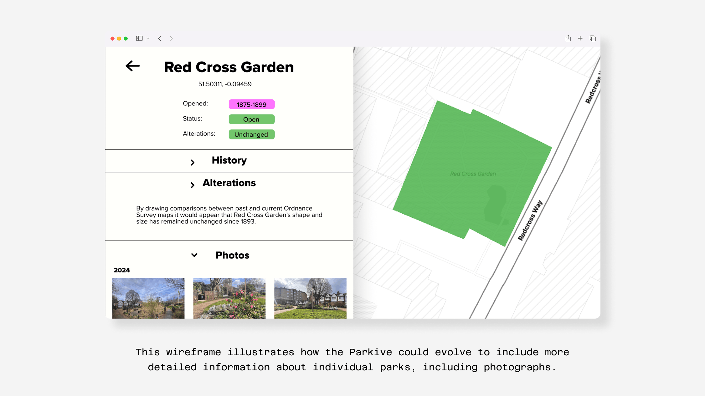
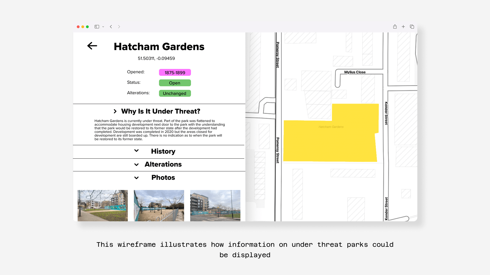
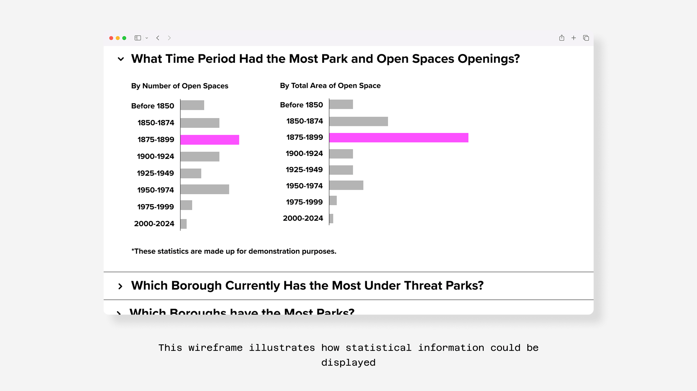
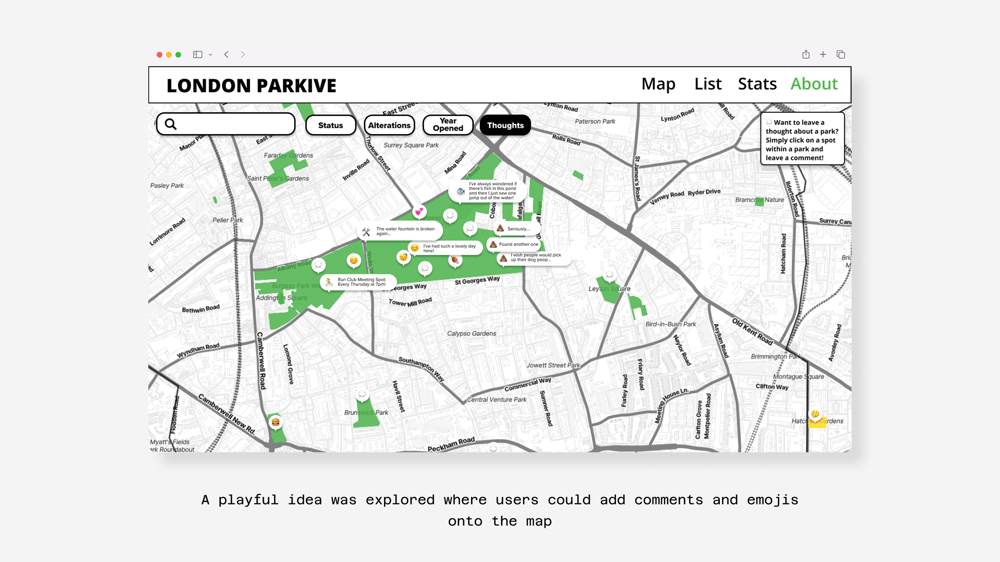
As a fledgling developer, building the website was the most challenging aspect. This project has taken me on an expedition through the lands of APIs and JavaScript libraries. Along the way I have learned about CSVs, JSON, geoJSON and how to program for GIS (Geographical Information Systems). It has made me really appreciate the open source nature of programming where you can rely on what others before you have done to make the process of building something easier. For context at the start of this project I thought I would have to code most of the website using only vanilla JavaScript.
The London Parkive uses a web-mapping tech stack that combines frontend web technologies with mapping libraries and geospatial data. Below is a summary of the various technologies that were used to build it.
Given this was my first major programming project, I encountered many challenges and many lessons were learned along the way including:
This was my first experience working with structured data formats such as CSV, JSON and GeoJSON. Through this I learned how efficiently large datasets can be stored and accessed within a web application. It also allowed me to create dynamic elements, such as map popups that display different information depending on the properties of each park.
Debugging was one of the biggest challenges. Early on I relied on some external help, but over time I became more confident in troubleshooting issues independently. By using browser developer tools and setting breakpoints, I improved my ability to trace problems in the code and understand where things were going wrong.
I learned that there are often multiple ways to achieve the same outcome in programming and that more complex solutions are not always the most effective. For example, while building the dropdown menus on the table page, I initially tried to dynamically generate their content. However, adding functionality to dynamically generated elements became overly complex within the project’s timeframe. After spending several weeks on this approach, I decided to simplify the solution by manually inputting the data. This allowed me to implement the required functionality much more quickly and complete the feature within a day.
If you are interested in reading about the development process in more depth, alongside reflections and a few emotional tantrums feel free to read read the build log by clicking the link below!